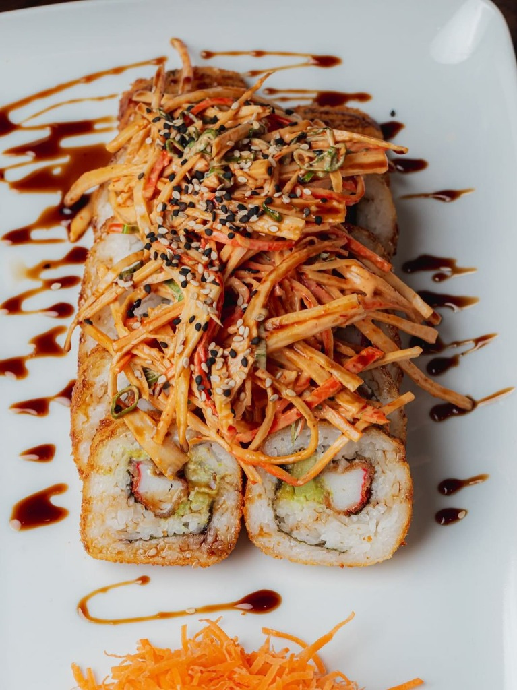
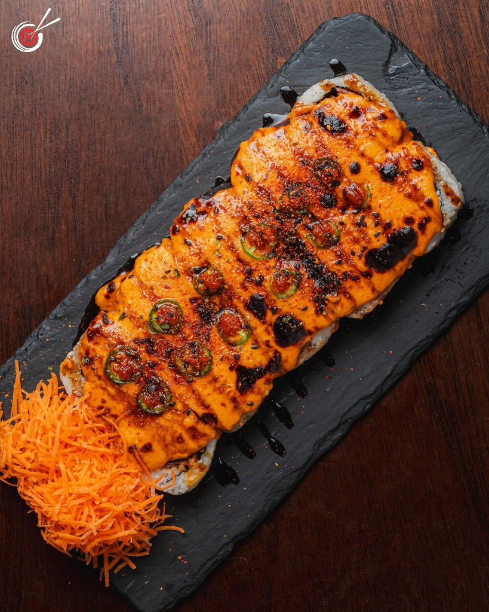
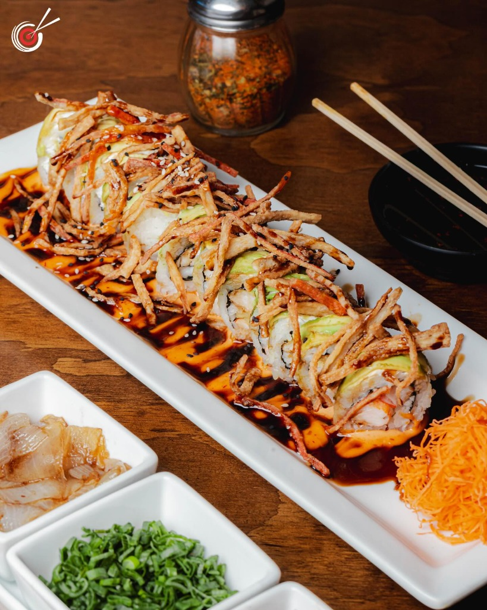
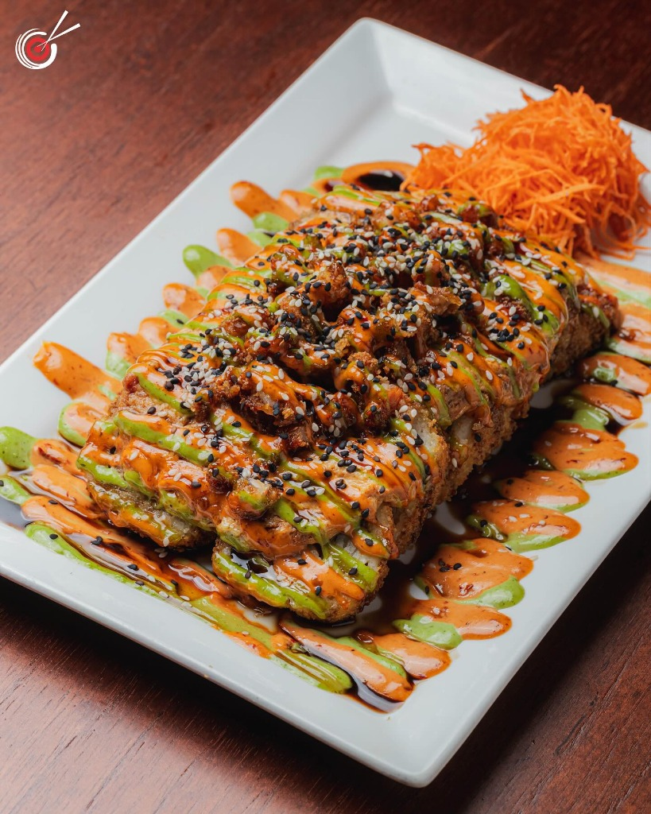

La Precisión Del Sabor, Experiencia Premium
En Polanco's redefinimos el sushi de alta gama. Cada ingrediente es seleccionado por su frescura excepcional, logrando una combinación perfecta entre textura, temperatura y sabor.




GREÑUDO
$125Philadelphia, Aguacate, Pepino, Surimi empanizado, coronado con ajonjolí y salsa de Anguila. Por fuera Surimi desmechado, aderezo Chipotle y cebollín.
El Silencio
Precede al Sabor.
No acumulamos condimentos. Seleccionamos un ingrediente protagonista de calidad insuperable y estructuramos el plato a su alrededor. El diseño arquitectónico de nuestras salas es reflejo de esta misma filosofía: limpieza y calma.
"Un buen plato de sushi no es aquel al que no queda nada que agregar, sino al que no queda nada por retirar."
Asegura Tu Mesa
Debido a nuestro aforo limitado y nuestra dedicación a la precisión en cada platillo, te recomendamos realizar tu reservación con anticipación.
Una vez completado el formulario, nuestro personal procesará tu solicitud y se pondrá en contacto contigo vía WhatsApp para confirmar tu espacio y coordinar cualquier preferencia especial.
Nuestras Sucursales
Disfruta de la mejor experiencia de sushi premium en cualquiera de nuestros 4 puntos de Culiacán. Encuentra tu sucursal más cercana.
Conquista
PrincipalDIRECCIÓN
C. Universo 4802, El Acueducto, 80058 Culiacán Rosales, Sin.
HORARIO
12:00 PM - 09:45 PM
Universitarios
DIRECCIÓN
Blvd. Universitarios 41, 80010 Culiacán Rosales, Sin.
HORARIO
10:00 AM - 11:00 PM
Valle Alto
DIRECCIÓN
C. Valle de la Rioja 4965, Valle Alto, 80050 Culiacán Rosales, Sin.
HORARIO
12:00 PM - 09:45 PM
Plaza Sendero
DIRECCIÓN
Área de Comida Plaza Sendero, Blvd. José Limón, Humaya No. 2545, 80020 Culiacán, Sin.
HORARIO
10:00 AM - 09:00 PM